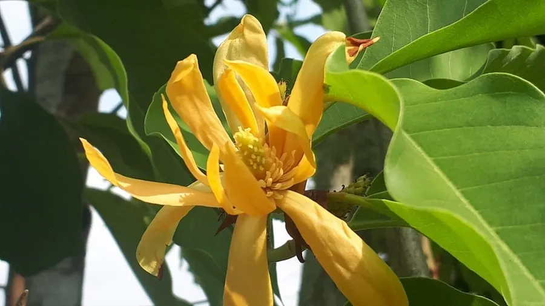

乔木 · 植物界
黄兰 Michelia champaca

原产南亚与东南亚的常绿乔木，花朵橙黄色、香气浓郁，是著名的香花树种，花可提取名贵香精。
- 分类
- 门被子植物门纲木兰纲目木兰目科木兰科属含笑属
- 栖息环境
- 海拔 800 米以下的热带亚热带地区，喜高温多湿
- 地理分布
- 原产印度、尼泊尔至东南亚，中国华南地区栽培
- 保护级别
- 暂无评估；中国未列入国家重点保护野生植物名录
物种志
黄兰为常绿乔木，高可达 20 m，树干通直，树皮灰褐色；叶片互生，长椭圆形至披针形，薄革质。花期 6–10 月，花单生于叶腋，花被片 6–9 枚、橙黄色至淡黄色，狭长，香气浓郁；聚合蓇葖果穗状，成熟时开裂，种子红色。
黄兰原产印度、尼泊尔至东南亚，中国广东、广西、福建、云南等地栽培，喜高温多湿、光照充足，适宜深厚肥沃的酸性土壤，不耐寒。花朵橙黄、香气浓郁，可提取黄兰精油，是配制高级香水的名贵原料；花也可窨制花茶、制作胸花；树形优美，常作为庭园与行道树。黄兰与白兰同属含笑属，但黄兰花色橙黄、香气更浓，白兰花朵洁白、香气较清雅。
形态与习性
- 株高可达 20 m，树干通直
- 花期6–10 月，花橙黄色芳香
- 果期栽培条件下少见结实
- 光照喜光，不耐长期荫蔽
- 水分喜湿润，怕积水
- 主要用途香花树种、提取高级精油、庭园与行道树
趣味知识
- 黄兰的花橙黄色、香气浓郁，是提取高级精油的名贵原料。
- 黄兰与白兰同属含笑属，但黄兰花色橙黄、香气更浓。
- 黄兰原产南亚与东南亚，中国华南地区常见栽培。